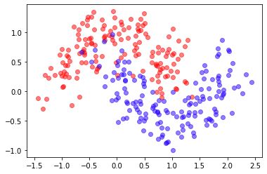

4.3 - Dropout, pooling#
!wget -nc --no-cache -O init.py -q https://raw.githubusercontent.com/rramosp/2021.deeplearning/main/content/init.py
import init; init.init(force_download=False);
import numpy as np
import tensorflow as tf
import matplotlib.pyplot as plt
import pandas as pd
%matplotlib inline
%load_ext tensorboard
from sklearn.datasets import *
from local.lib import mlutils
tf.__version__
'2.4.1'
Dropout#
Dropout is a sort of regularization See
We use a synthetic dataset
from sklearn.datasets import make_moons
X, y = make_moons(300, shuffle=True, noise=0.25)
mlutils.plot_2Ddata(X,y)

def get_model(num_classes=2, nlayers=3, lsize=64, compile=True, dropout=None):
print("using",num_classes,"classes")
inputs = tf.keras.Input(shape=(2), name="input_1")
layers = inputs
for _ in range(nlayers):
layers = tf.keras.layers.Dense(lsize, activation=tf.nn.relu)(layers)
if dropout is not None:
layers = tf.keras.layers.Dropout(dropout)(layers)
predictions = tf.keras.layers.Dense(num_classes, activation=tf.nn.softmax, name="output_1")(layers)
model = tf.keras.Model(inputs = inputs, outputs=predictions)
if compile:
model.compile(optimizer='adam',
loss='sparse_categorical_crossentropy',
metrics=['accuracy'])
return model
model = get_model()
model.summary()
using 2 classes
Model: "model_26"
_________________________________________________________________
Layer (type) Output Shape Param #
=================================================================
input_1 (InputLayer) [(None, 2)] 0
_________________________________________________________________
dense_81 (Dense) (None, 64) 192
_________________________________________________________________
dense_82 (Dense) (None, 64) 4160
_________________________________________________________________
dense_83 (Dense) (None, 64) 4160
_________________________________________________________________
output_1 (Dense) (None, 2) 130
=================================================================
Total params: 8,642
Trainable params: 8,642
Non-trainable params: 0
_________________________________________________________________
model.fit(X, y, epochs=20, batch_size=8, verbose=False)
model.evaluate(X,y);
10/10 [==============================] - 0s 488us/step - loss: 0.1758 - accuracy: 0.9167
predict = lambda X: model.predict(X).argmax(axis=1)
mlutils.plot_2Ddata_with_boundary(predict, X,y)
(0.52875, 0.47125)
model = get_model(dropout=0.3)
model.summary()
using 2 classes
Model: "model_28"
_________________________________________________________________
Layer (type) Output Shape Param #
=================================================================
input_1 (InputLayer) [(None, 2)] 0
_________________________________________________________________
dense_87 (Dense) (None, 64) 192
_________________________________________________________________
dropout_18 (Dropout) (None, 64) 0
_________________________________________________________________
dense_88 (Dense) (None, 64) 4160
_________________________________________________________________
dropout_19 (Dropout) (None, 64) 0
_________________________________________________________________
dense_89 (Dense) (None, 64) 4160
_________________________________________________________________
dropout_20 (Dropout) (None, 64) 0
_________________________________________________________________
output_1 (Dense) (None, 2) 130
=================================================================
Total params: 8,642
Trainable params: 8,642
Non-trainable params: 0
_________________________________________________________________
model.fit(X, y, epochs=20, batch_size=8, verbose=False)
model.evaluate(X,y);
10/10 [==============================] - 0s 513us/step - loss: 0.2144 - accuracy: 0.9167
predict = lambda X: model.predict(X).argmax(axis=1)
mlutils.plot_2Ddata_with_boundary(predict, X,y)
(0.513225, 0.486775)
model = get_model(nlayers=1, lsize=2, dropout=0.5)
model.summary()
using 2 classes
Model: "model_29"
_________________________________________________________________
Layer (type) Output Shape Param #
=================================================================
input_1 (InputLayer) [(None, 2)] 0
_________________________________________________________________
dense_90 (Dense) (None, 2) 6
_________________________________________________________________
dropout_21 (Dropout) (None, 2) 0
_________________________________________________________________
output_1 (Dense) (None, 2) 6
=================================================================
Total params: 12
Trainable params: 12
Non-trainable params: 0
_________________________________________________________________
model.fit(X, y, epochs=20, batch_size=8, verbose=False)
model.evaluate(X,y);
10/10 [==============================] - 0s 487us/step - loss: 0.5131 - accuracy: 0.7767
model.layers
[<tensorflow.python.keras.engine.input_layer.InputLayer at 0x7f42ac26b9d0>,
<tensorflow.python.keras.layers.core.Dense at 0x7f42ac1ed2b0>,
<tensorflow.python.keras.layers.core.Dropout at 0x7f42ac2411c0>,
<tensorflow.python.keras.layers.core.Dense at 0x7f42d0533fa0>]
observe the Dropout layer is used during training but has no weights
inp, l1, d, outp = model.layers
d.trainable, d.weights
(True, [])
but it is only used during training (default is training=False)
model(X[:2], training=False)
<tf.Tensor: shape=(2, 2), dtype=float32, numpy=
array([[0.80517787, 0.19482216],
[0.4387281 , 0.5612719 ]], dtype=float32)>
model(X[:2], training=True) # each execution may be different
<tf.Tensor: shape=(2, 2), dtype=float32, numpy=
array([[0.94704497, 0.05295507],
[0.48851433, 0.5114857 ]], dtype=float32)>
in inference a dropout layer is just a 1-to-1 mapping
tf.random.set_seed(0)
layer = tf.keras.layers.Dropout(.5, input_shape=(2,))
data = np.arange(1,11).reshape(5, 2).astype(np.float32)
print(data)
[[ 1. 2.]
[ 3. 4.]
[ 5. 6.]
[ 7. 8.]
[ 9. 10.]]
outputs = layer(data, training=False).numpy()
print(outputs)
[[ 1. 2.]
[ 3. 4.]
[ 5. 6.]
[ 7. 8.]
[ 9. 10.]]
in training dropout randomly drops inputs and normalizes. See tf.keras.layers.Dropout
outputs = layer(data, training=True).numpy()
print(outputs)
[[ 2. 0.]
[ 6. 8.]
[10. 12.]
[ 0. 16.]
[ 0. 0.]]
data[outputs!=0].sum() / layer.rate, outputs[outputs!=0].sum()
(54.0, 54.0)
Pooling#
!wget -nc https://s3.amazonaws.com/rlx/mini_cifar.h5
import h5py
with h5py.File('mini_cifar.h5','r') as h5f:
x_cifar = h5f["x"][:]
y_cifar = h5f["y"][:]
from sklearn.model_selection import train_test_split
x_train, x_test, y_train, y_test = train_test_split(x_cifar, y_cifar, test_size=.25)
print(x_train.shape, y_train.shape, x_test.shape, y_test.shape)
File mini_cifar.h5 already there; not retrieving.
(2253, 32, 32, 3) (2253,) (751, 32, 32, 3) (751,)
def get_conv_model(num_classes=3, img_size=32, use_maxpooling=True, compile=True):
print ("using",num_classes,"classes")
inputs = tf.keras.Input(shape=(img_size,img_size,3), name="input_1")
layers = tf.keras.layers.Conv2D(15,(5,5), activation="relu")(inputs)
if use_maxpooling:
layers = tf.keras.layers.MaxPool2D((2,2), name="pooling")(layers)
layers = tf.keras.layers.Conv2D(60,(5,5), activation="relu")(layers)
layers = tf.keras.layers.Flatten()(layers)
layers = tf.keras.layers.Dense(16, activation=tf.nn.relu)(layers)
layers = tf.keras.layers.Dropout(0.2)(layers)
predictions = tf.keras.layers.Dense(num_classes, activation=tf.nn.softmax, name="output_1")(layers)
model = tf.keras.Model(inputs = inputs, outputs=predictions)
if compile:
model.compile(optimizer='adam',
loss='sparse_categorical_crossentropy',
metrics=['accuracy'])
return model
observe the size of the models with and without pooling
model = get_conv_model(use_maxpooling=False)
model.summary()
using 3 classes
Model: "model_34"
_________________________________________________________________
Layer (type) Output Shape Param #
=================================================================
input_1 (InputLayer) [(None, 32, 32, 3)] 0
_________________________________________________________________
conv2d_8 (Conv2D) (None, 28, 28, 15) 1140
_________________________________________________________________
conv2d_9 (Conv2D) (None, 24, 24, 60) 22560
_________________________________________________________________
flatten_4 (Flatten) (None, 34560) 0
_________________________________________________________________
dense_95 (Dense) (None, 16) 552976
_________________________________________________________________
dropout_32 (Dropout) (None, 16) 0
_________________________________________________________________
output_1 (Dense) (None, 3) 51
=================================================================
Total params: 576,727
Trainable params: 576,727
Non-trainable params: 0
_________________________________________________________________
model = get_conv_model(use_maxpooling=True)
model.summary()
using 3 classes
Model: "model_35"
_________________________________________________________________
Layer (type) Output Shape Param #
=================================================================
input_1 (InputLayer) [(None, 32, 32, 3)] 0
_________________________________________________________________
conv2d_10 (Conv2D) (None, 28, 28, 15) 1140
_________________________________________________________________
pooling (MaxPooling2D) (None, 14, 14, 15) 0
_________________________________________________________________
conv2d_11 (Conv2D) (None, 10, 10, 60) 22560
_________________________________________________________________
flatten_5 (Flatten) (None, 6000) 0
_________________________________________________________________
dense_96 (Dense) (None, 16) 96016
_________________________________________________________________
dropout_33 (Dropout) (None, 16) 0
_________________________________________________________________
output_1 (Dense) (None, 3) 51
=================================================================
Total params: 119,767
Trainable params: 119,767
Non-trainable params: 0
_________________________________________________________________
observe the layer has no weights
p = model.get_layer('pooling')
p.trainable, p.weights
(True, [])
the layer can be applied anywhere there is a 2D structure
x_cifar[:1].shape, p(x_cifar[:1]).shape
((1, 32, 32, 3), TensorShape([1, 16, 16, 3]))
observe how the max is computed over each pixel and over each channel
# a random position
i,j = np.random.randint(16, size=2)*2
x_cifar[:1][0,i:i+2,j:j+2]
array([[[0.30980392, 0.28627451, 0.28235294],
[0.01176471, 0. , 0.00392157]],
[[0.07843137, 0.0627451 , 0.05490196],
[0.01568627, 0.00784314, 0.02352941]]])
p(x_cifar[:1])[0,i//2,j//2,:]
<tf.Tensor: shape=(3,), dtype=float32, numpy=array([0.30980393, 0.28627452, 0.28235295], dtype=float32)>